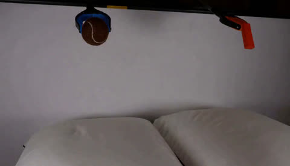
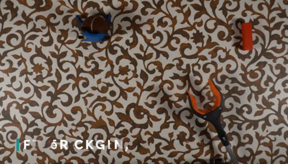
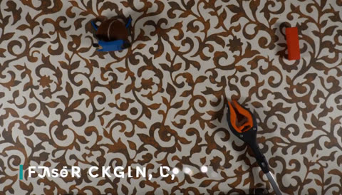
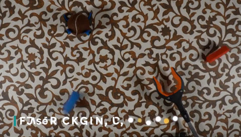
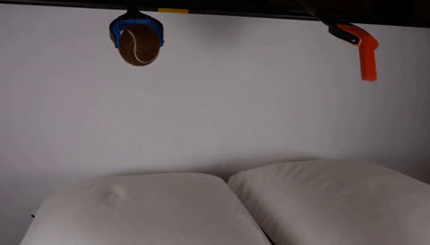
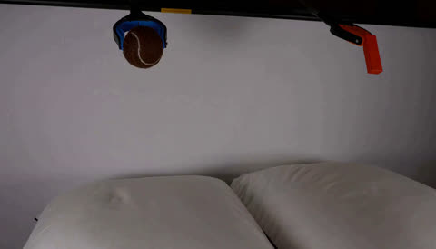
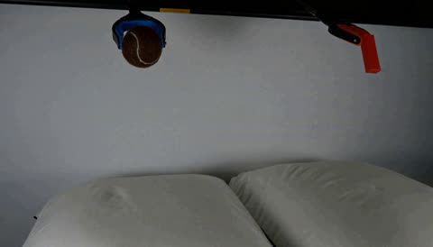
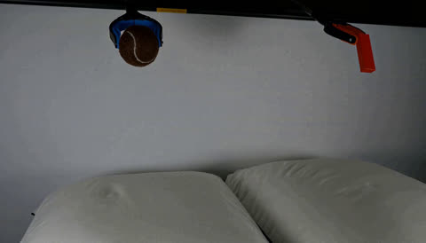
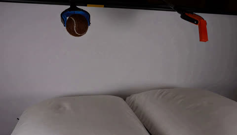

FL2VA (keyframe-to-video, MiniMax-H3 base) has a reproducible mid-clip collapse: generated video hallucinates into an unrelated "clutter of small 2D objects" visual family (photo-collage, barcodes, cards) starting around frame 15, right after the first-keyframe condition. This page tests one candidate fix: upweighting the DMD loss 3x on the leading 5 latent frames of the generated video (matching the video VAE's own chunk size) — the region immediately following the first keyframe.
first_chunk_loss_weight=3.0, first_chunk_latent_frames=5.
“Two pillows on a table and two grabber tools hanging above them from which a brown tennis ball and an orange block are suspended. The grabber tools let go of the ball and block. Static shot with no camera movement.”









last keyframe anchor. The fix shows no collapse at any sampled frame (1, 15, 30, 60, 105): the scene, pillows, and grabber tools stay visually correct throughout.
last keyframe anchor being present) to a genuine undertraining gap in the chunk right after the first keyframe condition — which lines up with the video VAE's own chunk-decode boundary (tokens_chunk_size=5 latent frames). See the related DMPDD rank128/LR1e-4 gate-fix gallery for a separate, already-confirmed fix in the ref2va line of work.